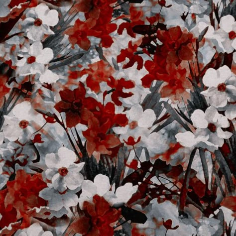
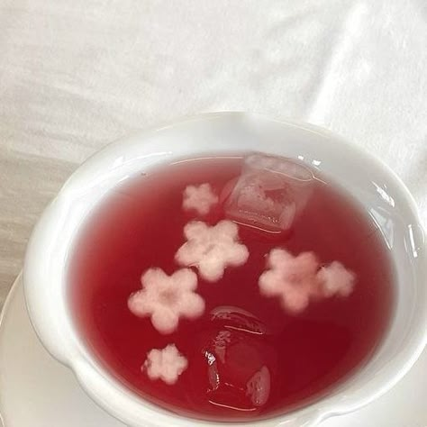

Kiriko is a trauma holder for the system, holding the trauma surrounding Tourettes and its impact on the family.
She enjoys kpop, nature & animals, and gaming. Her favourite animal is a fox.
She is recently formed, meaning she is still new to the system and how it works. Keep this in mind when engaging with her.
Kiriko's Gallery

